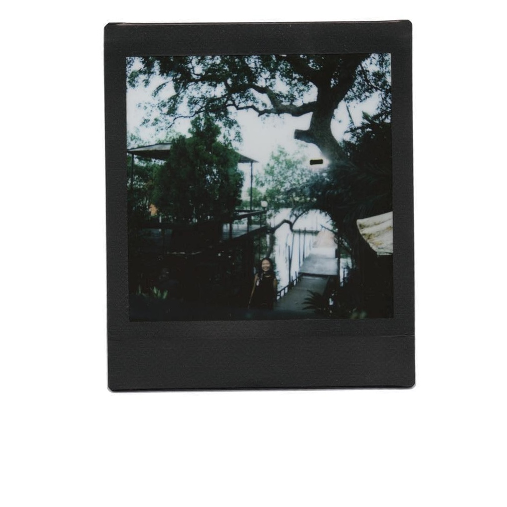

Khim Inthongpan is a designer whose work explores how people navigate systems both digital and social and how design can soften complexity without losing nuance. Her early work focused on climate glimpses, social innovation, and intervention strategies threads that continue to shape her design sensibility today.
Her interests span service design, visual storytelling, research-driven strategy, and tools that center empathy in everyday experiences. Her projects range from co-creating learning platforms that bridge cultures and languages, to redesigning public service flows for inclusivity, and shaping brand led digital experiences that feel both intuitive and intentional. As part of a consultancy, she’s worked across industries often translating between stakeholders, users, and developers to find clarity in constraint.
Khim holds a Bachelor of Arts in Global Studies and Social Entrepreneurship with a focus in Intervention and Social Innovation, and currently leads projects at Sand Studio & Co.
